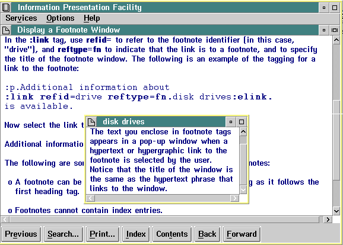

Input Example
:fn id=drive. :p.The text you enclose in footnote tags appears in a small window when the user selects a hypertext or hypergraphic link to the footnote. Notice that the title of the window is the same as the hypertext phrase "disk drives" that links to the window. :efn.
The id= attribute identifies the footnote for linking purposes.
In the :link tag, use refid= to refer to the footnote identifier (in this case, "drive"), and reftype=fn to indicate that the link is to a footnote, and to specify the title of the footnote window. The following is an example of the tagging for a link to the footnote:
:p.Additional information about :link refid=drive reftype=fn.disk drives:elink. is available.
The following figure shows the resulting footnote window.

Footnote Window
The following are some important points to remember about footnotes: